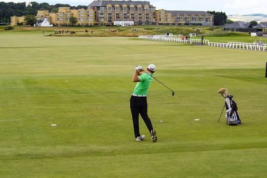

Mitä golf on?
Golf on ulkona pelattava pallopeli, jossa tavoitteena on saada golfpallo reikään mahdollisimman vähillä lyönneillä.
Golfissa yhdistyvät tekniikka, keskittyminen ja strategia. Laji sopii monenikäisille pelaajille.

Miksi golfia kannattaa kokeilla?
Golf tarjoaa liikuntaa, ulkoilua ja mahdollisuuden viettää aikaa ystävien kanssa.
Golfin hyviä puolia
- Liikuntaa ulkoilmassa
- Sopii monenikäisille
- Kehittää keskittymiskykyä
- Tarjoaa jatkuvasti uusia haasteita
Yksi golfin kiinnostavimmista puolista on se, ettei peliä voi koskaan täysin hallita.
Golfissa sanottua
"Golf on peli, jossa tärkein vastustaja on usein pelaaja itse."